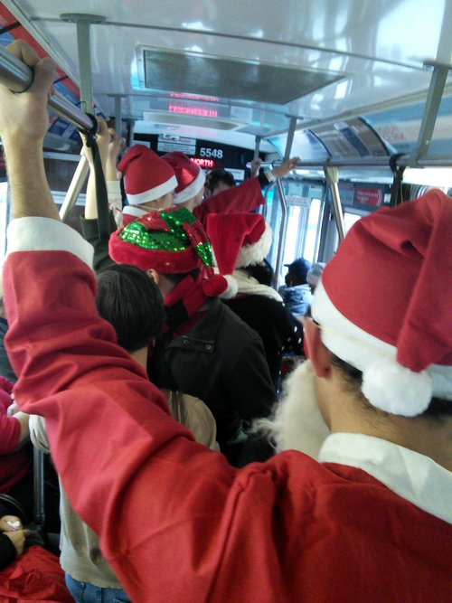
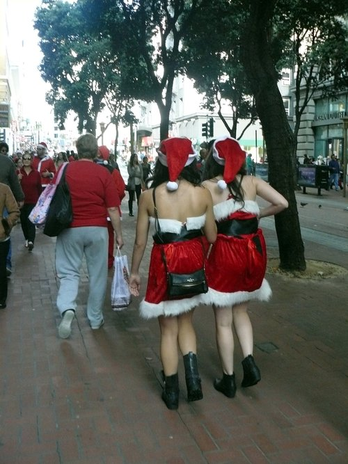
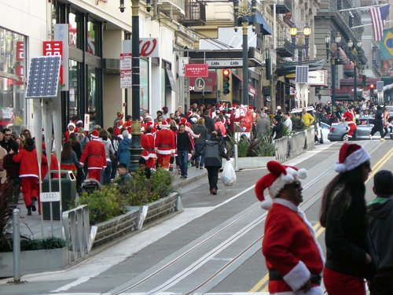
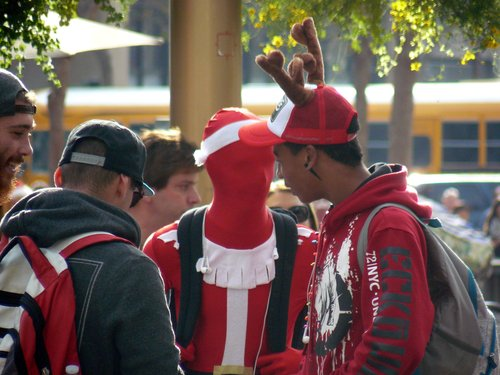
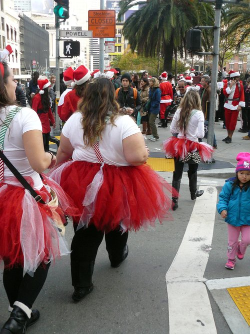
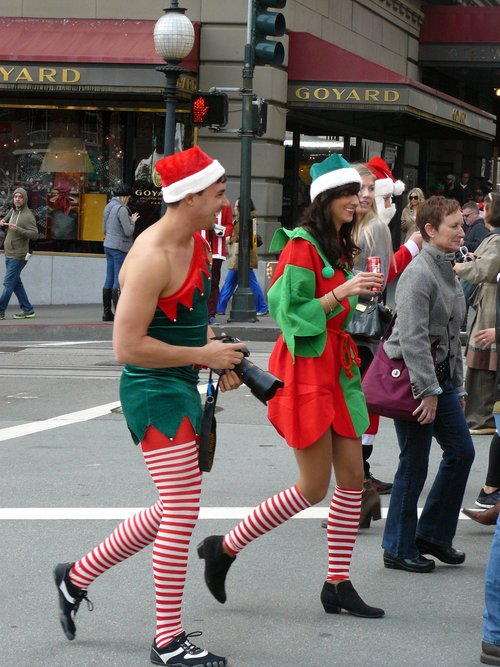
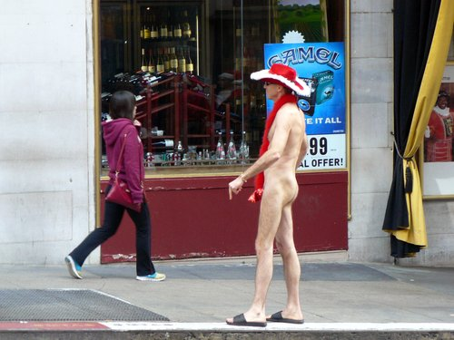
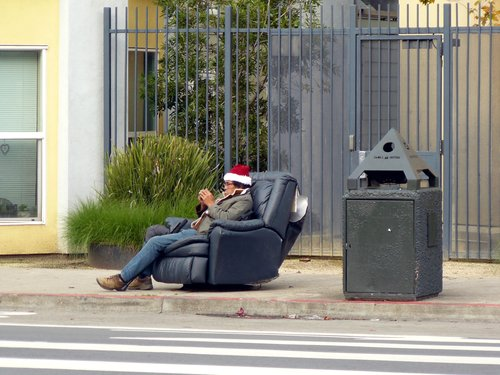
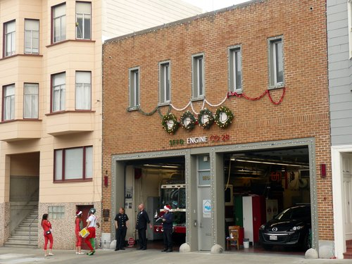
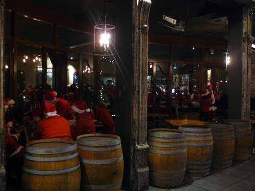

Z Helsinek pluje do Tallinnu několik trajektů denně od různých společností. Když jsme se vrátili z Nuuksia a hledali info, čím bychom mohli jet, vyšel nám z toho nejlíp až noční trajekt a tím pádem jsme měli ještě pár hodin na Helsinky. To už jsme chodili jen tak po známých místech, stejně jako všichni ostatní jsme se natáhli na trávu v parku a užívali pohodu. Jo a potkali jsme beeršalinu!
Trajekt odplouval z Helsinek zrovna při západu slunce, takže jsme se s Finskem rozloučili parádně. Honza se v průběhu plavby vydal na lov do duty free shopu a jinak už na plavbě nebylo nic moc zajímavého, byli jsme rádi, že jsme našli zásuvku a na tabletu zjistili nějaké další užitečné info. Do Tallinnu jsme dopluli něco po půlnoci a následně jsme se vydali pěšmo do city kempu, což nakonec byla pořádná procházka a dorazili jsme až kolem 2 ráno. Na recepci už nikdo nebyl, tak jsme si prostě našli kus trávy a rozbili stan. Naštěstí kemp nebyl nějak oplocený… Ráno jsme využili sprchu, sbalili se a vyrazili směrem k centru, ale vzali jsme to procházkou přes parky, Lauluväljak - alias plocha pro masové estonské zpěvy, dál přes zámek a zahrady. Chtěli jsme si nechat bágly v úschovně na vlakovém nádraží, ale vybrali jsme si špatné nádraží s krátkou otevírací dobou, takže nezbylo než se s plnou polní vydat do historického jádra města.
Historická část Tallinnu je zakonzervovaná minulost - skvěle dochované hradby a domy, kde na každém druhém vchodu najdete ceduli s informací, co nebo kdo v tomto konkrétním domě dřív bylo. V jednom z kostelů se dá za vstupné vystoupat na střechu, to jsme využili a rozhled odtud stál za to. Jinak nahoře ve věži sedí paní, která poskytuje první pomoc těm, co přecenili svoje síly. Schodů bylo dost. V Tallinnu jsme taky narazili na nejstarší nepřetržitě provozující lékárnu v Evropě, ale motalo se tam strašně turistů a zároveň lidi, co si přišli normálně nakoupit léky.
Celé historické centrum včetně nádvoří u hradu (dnes budova parlamentu) a ortodoxního pravoslavného kostela jsme za pár hodin procourali a vyzbrojeni radami a vzácnou mapkou z informačního centra jsme se vydali na autobusové nádraží, odkud jsme měli odjet nočním dálkovým spojem do Võsu - malého přímořského letoviska. Kde tam budeme spát jsme neměli nejmenší tušení…
Cesta do Nuuksia je na delší vyprávění… Po rekordně rychlém sbalení věcí jsme v Helsinkách vyrazili na autobusovou zastávku Opera, odkud jsme měli s jedním přestupem dojet k národnímu parku Nuuksio. Při hledání správné zastávky nastala trochu panika, protože jsme nevěděli, kterým směrem vlastně jedeme a přímo na zastávkách jsme nenašli žádné užitečné informace. Po krákém rozhovoru s místňáky jsme nebyli o nic moudřejší, ale byli jsme svědky toho, jak mávnutním na projíždějící bus signalizují řidiči, což nás překvapilo, ale vlastně nám to dost pomohlo. Když jsme totiž v zápětí uviděli blížící se bus s naším číslem, Honza honem mávnul a bus zastavil. Řidič nám víceméně potvrdil správný směr, nicméně jsme začínali cestou být trochu nervózní, když se na monitoru stále neobjevovala naše cílová zastávka. Honza tedy po ověření přes mapu v tabletu rozhodl, že musíme vystoupit kdesi u pumpy u lesíku, než uplně ztratíme směr cesty.

Bez pořádné mapy a informací jsme se tedy ocitli kdesi v zapadákově, na pumpě nám nepomohli, takže Honza koupil kafe, dal do kupy info, co měl, a vyrazili jsme pěšmo po lokální cestě směrem k parku. Po pár kilometrech pochodu začalo domečků ubývat, až jsme nakonec slavnostně došli k ceduli označující vstup do chráněného území, naštěstí bez nějakých bariér, ale taky bez žádného turistického značení. Po pěšinkách jsme se snažili držet směr k místům, kde podle našich informací mělo být tábořiště, no a kupodivu jsme po dalších pár hodinách celí šťastní stanoviště u jezera opravdu našli! Tehdy jsme ocenili, že slunce zapadalo pozdě a my jsme nemuseli bloudit lesem potmě. I kolem půlnoci ještě bylo šero.
Další den jsme měli v plánu strávit v parku a tak se i stalo, to už jsme chodili po označených trasách a potkávali sem tam místňáky, kteří si přišli načesat borůvky nebo na ohni upéct klobásky. My jsme bohužel neměli ani klobásky, ani zápalky, takže jsme jen lovili borůvky. Ale obdivovali jsme, jak skvělé bylo zázemí v tábořištích - naštípané dřevo, posezení, kotlík, čisté kompostovací kadibudky… Jo a fakt nikde žádné odpadky! Jinak pobavili nás místňáci, kteří i v dešti trpělivě dál opékali klobásky, jako kdyby nic.
Po druhé noci v Nuuksiu jsme ještě měli před sebou dlouhou tůru přes park, abychom došli někam, odkud by zase bus měl jet zpět do civilizace. Z parku jsme nakonec vylezli přímo u turistického centra Haltia, což je nově postavený komplex s muzeem, který ještě nebyl ve starých mapách. Tady jsme do sebe za odměnu nacpali mega oběd se všemi chody na krásné terase s vyhlídkou do údolí. Po obědě nás čekala cesta busem do města Espoo a odtud vlakem do Helsinek. No a během této zpáteční cesty jsme zjistili, jak to bylo s tou zpackanou dopravou do parku - jeli jsme správným autobusem správným směrem, ale přestup se odehrává v rámci dvou zastávek, z nichž každá stojí u jiné cesty a každá se jinak jmenuje. No a my měli zjištěný ten druhý název. Takže pozor na přestup na Ikea Espoo!
Na nějakém serveru sledujícím levné letenky jsem v zimě zahlídla tuhle vynikající akci a to jsme si samozřejmě nemohli nechat ujít, takže jsme o několik měsíců poté vyrazili směr Helsinky. Na první dvě noci jsme měli domluvené ubytko přes airbnb a tam jsme taky z letiště zamířili ve zcela prázdném (alias privátním) autobuse, samozřejmě s wifi a možností platit kartou. No a protože už byla tma a pěkně pršelo, ten den jsme stihli akorát pokec s naší milou hostitelkou. Hezké bylo porovnávání, kdo je víc odtažitý národ, jestli Češi nebo Finové. :)

Helsinky
První ráno v Helsinkách jsme celí natěšení vyrazili pěšmo do centra, okoukli jsme parky, okolí knihovny a muzea umění, hlavní nádraží, sochy a fontánky, až jsme se docourali na Market Square na nábřeží, kde jsme si dali pod zastřešeným stánkem oběd a první finské kafe. No a odtud jsme se vydali místní MHD lodí na bývalou ostrovní pevnost Suomenlinna, která svého času představovala počtem obyvatel druhé nejlidnatější místo ve Finsku. Suomenlinnu jsme si díky odpoledním deštíkům vychutnávali v klidu a bez turistů, což bylo super! Prolezli jsme ostrovy křížem krážem, zajímavé byly určitě nejstarší finský suchý dok, zaparkovaná ponorka, přehlídka děl různého stáří a velikostí, “hobití domečky”, nebo i kostel, který Finové po osamostatnění přestavěli z původního pravoslavného k nepoznání. Prošli jsme se po skalnatém břehu, pozorovali jsme kolem proplouvající trajekt a představovali si, jak by asi vypadal útok z pevnosti.
Z ostrovů jsme se o pár hodin později vrátili lodí zpět na pevninu a směřovali jsme tentokrát na hlavní náměstí obhlídnout dominantu Helsinek - zdejší katedrálu. Kromě toho je náměstí zajímavé tím, že se tam dá chytnout free wifi, což se může hodit. Pak už jsme zabloudili spíš mimo centrum, k pobřeží, kde jsme se kochali pohledem na moderní byty a záviděli čistotu a funčnost veřejného prostoru, potkali jsme zaparkované ledoborce, námořnickou minu a plující kancelář, no a nakonec jsme procházeli kolem mola s lodičkami všech druhů. Utahaní jak cyp jsme se v závěru dne vydali do čtvrti, o které nám naše hostitelka vykládala, že to tam v noci žije. Ale asi jsme nenašli ty správné ulice, protože jsme moc života v této čtvrti nenalezli, Honza se ale nedal a tak mě umluvil alespoň na longdrink v místní hospůdce, cenu jsem raději nezjišťovala. :)
Druhé ráno v Helsinkách jsme zahájili vynikající snídaní v Cafe Regata, odkud jsme se vydali přes místní pláž po stezce kolem vody nejdřív k Sibeliově monumentu a dále do uliček, které nás dovedly ke kostelu ve skále. Tento kostel zvenku vypadá velmi nenápadně ale vevnitř oplývá opravdu velmi netradiční, těžko popsatelnou atmosférou. Původně byl naprojektovaný jako klasický kostel, ale pak se stavba musela přerušit a zůstalo jen patro vykutané ve skále, zakryté prosklenou střechou. Naše další kroky se stočily na místní riviéru, kde to vzhledem k vyletněnému počasí neskutečně žilo - všichni vyrazili užít si víkendový slunečný den ven. Riviéra byla delší, než jsme mysleli, takže jsme nakonec rádi popojeli místní tramvají směrem k našemu ubytku. Čekalo nás totiž balení a odjezd směr národní park Nuuksio…
[video]
Protože je březen a dlouho nevznikl žádný zápisek, tak tvořím přehled o uplynulém zimním období. Sněhu jsme si teda letos moc neužili, vrchol žižkovské nadílky je ale naštěstí zdokumentován do archivu…
Abych to vzala popořádku: Vánoce se nesly převážně v duchu Honzova jetlegu, protože ještě cca 5 dní po příletu ze SF byl celkem nepoužitelný. Trochu za to mohlo i dlouhé čekání na batoh zaseknutý v Amsterdamu, kvůli kterému jsme šli ten den pozdě spát. Svátky jsme pak strávili v Tečovicích, kde jsme stihli vidět (a prospat) Rybovku, zajít do Dobré čajovny, udělat pár procházek po okolí a zajet na výlet do aquaparku v Uherském Hradišti se zastávkou na Velehradě. Tam jsme shodou okolností zažili asi největší kosu za celou zimu, i když to na fotkách nevypadá.


Potom jsme se přes Olomouc vydali do Brna oslavit námořnický silvestr. Ten se opravdu vyvedl, jak kostýmy, tak kuchyně byly parádní. O půlnoci jsme pouštěli lampióny štěstí. Jediné mínusy: Honza ztracen na Kraváku a moje již tradiční novoroční nevolnost. K nezaplacení!

Leden se nesl spíše v duchu nemocí, takže jsme nicmoc zajímavého nepodnikli, ale měli jsme tu alespoň nějaké návštěvníky. V únoru už to bylo lepší, naplánovali jsme si týden plný zážitků v Brně, kde nás ubytovali manželia Bakešovci. Nakonec to bylo hodně deskovkové - Peno nás naučil hrát Le Havre a taky jsme si to v čajovně rozdali v Osadnících s místním přeborníkem. Já jsem pobyt zakončila bohužel předčasně kvůli chřipce. :( Honza ještě koučoval workshop Django girls.
Na Valentýna jsme se dali nějak dopořádku a zvládli jsme v jeden den absolvovat vsetínský Barcamp ve Zlíně a večer ještě myslivecký ples, kde jsme mimo jiné obdivovali DJ se stylem ala Lionel. Ten nás oslnil skvělou interpretací písně Ještěže tě lásko mám. Jinak nás ale hudba k tanci moc nesváděla, vínko bylo naštěstí dobré.
Jediný skutečně pražský zážitek se týká víkendové procházky z Libně do Tróje. Cestou toho bylo k vidění poměrně dost, Libeňský zámeček (radnice), doky, lodě, protipovodňová vrata, Bílá skála, choroše, bezdomovecké příbytky, mosty, umělý kanál pro vodní slalom, trojský kůň, zámek Trója a vinice a spousta infocedulí. Nakonec jsme prošli přes Stromovku k výstavišti a planetáriu a to byl konec pěkného výletu.

Tak aby to tu nebylo jen o Honzových zážitcích z Ameriky, tak přidávám své skromné události z doby slaměné. Bude to ale jen v rekapitulaci, takže:


A to je tak asi všechno, co by stálo za řeč. Jak jsem již některým říkala, tak slaměnou samotou jsem nějak zvlášť netrpěla, je to poprvé, co jsem měla na delší čas bydlení sama pro sebe, takže to bylo pro mě nové a kralování jsem si celkem užívala. Introvert ve mně je zcela spokojen. Co si užívám ještě víc, je, po mnoha letech, zima a svátky bez školy a zkoušek. Juhů. :) No a za chvíli si jdu pro Honzíka na letiště, takže zuzejkova doba slaměná definitivně končí.
Tak. V pondělí, tedy za dva dny, letím domů. To to uteklo, co? Moc jsem vás nakonec těmi zážitky ze San Francisca nezásobil, co? No, nedá se nic dělat. Zkusím to shrnout do jednoho guláše.

Problém je, že když někam jedu na na tři dny, tak se pro to místo nadchnu, obejdu všechny památky, nafotím co se dá, v hlavě shromažďuji postřehy a mám chuť o tom psát nějaké články. Jenže když jsem někde měsíc nebo půl roku, tak si po nějaké době zvyknu a už se mi to vlastně tak hluboce rozebírat nechce. Dojmy jsou kouskovaté a rozmělněné mezi práci (kdysi na Erasmu mezi školu), už to není všechno tak intenzivní, člověk se věnuje běžnému životu a už mu ani jeho vlastní dny nepřipadají taková bomba, aby o tom hned musel někde referovat.


V San Franciscu je teď zima, což znamená, že dost často lije. Měli jsme tady i jednu srandovní bouřku, která vlastně ani bouřkou nebyla a jenom pršelo, ale zpanikařilo z toho celé město. Není to tady na déšť moc dělané. Jestli my se někde perem se něhem (zatímco ve Finsku to mají pošéfované), tak tady se perou s deštěm (zatímco u nás to máme pošéfované).
No, ale i přesto, že pršelo, že jsem na začátku na zajímavosti kašlal a i přesto, že tu je teď půl dne tma, tak si myslím, že jsem toho nakonec viděl docela docst. Nad očekávání.


Nu, za celý ten měsíc jsem teda nakonec viděl následující:
Lombard St. ve skutečnosti nejklikatější není, to je nějaká jiná ulice, ale tato je turistickou atrakcí, tak jsem tam šel se podívat. A je to dost vtipné, hlavně pozorovat ty turisty tam :-D


Neviděl jsem Alcatraz, protože se mi tam na začátku ještě nechtělo a když už se mi tam celkem i chtělo, tak už tam nebylo s kým jet. Samotný jsem se raději projel někam na kole.


Ještě toho spousta zbývá, takže kdybych se sem podíval zase, tak budu mít pořád co dělat. No a kdyby náhodou, tak je tu pořád ještě okolí SF, které jsem moc neprozkoumal - žádné sekvoje, žádné národní parky, žádné víno v Nappa, atd. Pršelo, nebylo moc s kým, nebo nebylo jak - zkusil jsem něco objet na kole, ale třeba půjčeným autem by to asi bylo lepší. A to jsme zase u toho, že nebylo moc s kým. Ve více lidech by to bylo asi trochu o něčem jiném. Než jsem se rozkoukal, odjela půlka zdejšího osazenstva domů a teď jsem tu dokonce už úplně sám.


San Francisco je pecka co se týče jídla. Chcete-li ochutnat jakoukoliv kuchyni na světě a chcete-li přitom být na jednom místě, jeďte sem. Zapomeňte na česká ušmudlaná asijská bistra. Tady neexistuje asijské bistro, protože Asie je přece velká - je tu vietnamská kuchyně, čínská, japonská, barmská, indická, … Je-libo etiopskou kuchyni? Čerstvé sushi, včera letadlem přepravené z Tokia? Brazilský steak house all inclusive? Živý krab? Smažená kreveta? Všechno se tu najde.


No, akorát že já žádné takové věci neznám a vůbec nic z toho neumím jíst :-D Neznám plody moře a přijdou mi divné, nevím co znamená polovina názvů jídel ve všech asijských kuchyních, mám tragickou slovní zásobu i v angličtině co se týče stravování, nemám rád jídla, které mají nohy a oči a tykadla, děsí mě všechny ty sladké nebo smažené americké pokrmy, nelibuji si v ostrých věcech, neumím jíst kraby, atd. Jsem rád, že se trochu najím hůlkama. Průzkumy neznámých kuchyň tudíž probíhaly sporadicky, spíše za dodání kuráže kolegy nebo přímo s instruktáží od druhých jak co jíst, jako třeba u toho sushi, které bylo teda výborné, ale sám bych netušil co si objednat nebo jak to požít :-) I tak jsem toho na můj vkus zažil nového dost, co se týče jídla. Ale už se fakt těším domů na nějaký kus řízku nebo guláš nebo i blbé těstoviny s něčím. Prostě obyčejné jídlo! :-) Mou jedinou záchranou tady byly indické nebo mexické pokrmy, v nichž jsem se ještě tak nějak trochu dokázal zorientovat.


Restaurace tady fungují dost zvláštně a trvalo mi, než jsem přišel na to, jak se s tím poprat. Pokud jsou totiž dobré, tak se tam prostě stojí fronty. Buď si uděláte rezervaci, nebo přijdete a stojíte, než se uvolní nějaký stůl a posadí vás tam. Můžete čekat třeba 20 minut, ale i dvě hodiny. Nikomu to moc nevadí a je to známka toho, že restaurace je dobrá. Ostatně fronty mají rádi všude - jak někde není fronta, tak to prostě není dobrý! Jo a ve všech barech a restauracích je tady zakázáno kouřit. To je teda super.


Všiml jsem si taky, že skejt je tu úplně normální dopravní prostředek, jezdí tady na něm hrozně moc lidí. Nevím, jestli je to jakože Amerika, nebo jestli je to tu tak oblíbené díky těm kopcům… ale jako - nikdy jsem na skejtu nejel, tak netuším třeba jak to brzdí. Dneska jsem sjížděl jeden hóódně prudký kopec na kole, pomaličku s brzdama a měl jsem co dělat, abych si neklovl do silnice přede mnou.


Stejně tak je tady úplně normální dopravní prostředek Tesla :-) Nebo Uber, tím to tady žije. A co se týče vozového parku, to je vůbec zajímavé. Za celou dobu jsem nejspíš neviděl jedinou škodovku, ale jinak se tu dá vidět od různých veteránů přes takové ty staré americké silniční koráby až po nějaká Lamborghini a Porsche úplně všechno. A hodně lidí tu má všelijaká SUV. Čím mohutnější auto, tím lepší. Stejně tak jsou mohutné autobusy, náklaďáky, apod. Naše evropské náklaďáky by tady vypadaly jako chudáčci i vedle poštovního auta.


Jo a jak jsem psal o tom, že jsou tu bezďáci a je jich tu plno, tak to je sice fakt, ale zjistil jsem, že je tu posílají z celé USA, protože tady prý neumrznou :-) No a taky tady lidi dělají různé charitativní akce a krmí je a dávají jim deky a tak - a to i ti hipsteři z práce, o kterých jsem myslel, že žijou v nějaké úplné bublině. Jako sice žijou v bublině, ale aspoň se o ty bezďáky trochu starají, no.


Co se týče Vánoc, tak ty přišly dost pozdě oproti českému říjnovému bláznovství. Tady je totiž Halloween a pak Thanksgiving, takže to Vánoce o dost zdrží. Po Thanksgiving (čtvrtek) je černý pátek, kdy jsou takové ty šílené slevy na všechno, a tím “oficiálně” startuje vánoční sezóna a lidi začnou zdobit stromky a domky a všechno kolem sebe. U nás žádné takové svátky nejsou, takže obchody se zdobí už na konci srpna. To mi tu fakt nechybělo. No a i tak, jak tady není ten sníh nebo zima a člověk nemá televizi s reklamama a nečte moc české zprávy, tak jsem vlastně od Vánoc takový dost izolovaný letos. Jako vidím ty stromky a ozdoby a v obchodech a restauracích hrajou vánoční písničky od koled po Franka Sinatru, ale nějak mě to prostě nenastartuje, když stejně vidím kolem sebe palmy a když se poštěstí, dá se venku chodit pořád i v košili. A ani když ty palmy obtočí žárovkama, tak mě to nenabudí. Asi jsem prostě kulturně svázán s trhy na Svoboďáku a turbomoštem, co naplat.


No a víc postřehů nemám. Viděl jsem v trolejbuse upozornění, že minimální mzda v San Franciscu je $11,05 za hodinu. Ale je dobrý to brát v kontextu města, které je jedno z nejdražších míst v USA (pozemky mají větší hodnoty než na Manhattanu).


Kdybyste někdy jeli do San Francisca, nebo kdybych sem jel zase já a chtěl si to připomenout, sepsal jsem si takový návod jak zůstat naživu, aneb “stay safe in SF”:
Zatímco ty nejnebezpečnější místa byste navštívili omylem jen stěží, zbytek těch problematických míst je přímo v centru města. Třeba Civic Disctrict je prostě oblast, kde je radnice a univerzita a vládní budovy, ale holt to není zrovna dobrá adresa. Jdete kolem radnice, která vypadá jak kopie bílého domu nebo tak něčeho, a říkáte si, jak nejste v nějaké sluníčkové oblasti, ale pak se rozhlídnete pořádně a zjistíte, že teda moc nejste :-) Tenderloin je říše zla s divnými lidmi, štětkami, feťáky a bezďáky (omylem jsem tam párkrát zabloudil, takže vás nestřelí hned do hlavy - to platí asi spíš pro ten West Oakland - ale necítíte se tam prostě úplně příjemně), 6th St. je slum bezďáků, v Civic District jsou hlavně bezďáci a feťáci, tak to tam až tak nebezpečný není, jen je to divný.

Obecně hlavně bezďáci nejsou nijak nebezpeční, jen žebrají, spí na ulici a nejsou nijak agresivní. Market St. a SoMa jsou gentrifikované oblasti, kde se jich po zemi válejí spousty… je tam dost chudých lidí a zároveň tam mají kancly třeba Twitter nebo Heroku a bourají se tam celé bloky a staví se tam místo nich nové mrakodrapy. Není to tam nebezpečný, ale ulice tam voňavé nejsou.

V SF (a možná je to tak i v jiných US městech) je fakt silný koncept “distriktů”, tzn. nějakého území, které má specifický ráz, lidi, vlastnosti, atd. Distrikt je ohraničen nějakými ulicemi a dost často se to prostě změní na několika metrech - žádné pozvolné přechody. Je to fakt dost zvláštní. Platí to jak pro pohodový a turistický China Town, tak pro nebezpečný Tenderloin. Stačí ho obejít o ulici vedle a v podstatě vám nic nehrozí.


No, čím bych to zakončil? Když už jsem se tak rozepsal… Žádné moudro v rukávu nemám. Když se ohlédnu, říkám si, že to docela uteklo a že jsem to nakonec strávil pěkně, ten čas. Nad očekávání :-) A že nebýt toho počasí a následně i nedostatku parťáků, tak bych tomu celkově asi nic nevytknul. Musím se naučit lépe prozkoumávat jídlo, protože mi to moc nejde a zjistil jsem, že moje chutě prostě končí někde 10 cm za knedlíkem a že s tím ve světě asi moc neobstojím, takže bude lepší, když se trochu adaptuju a naučím se nejen jíst, ale i vychutnávat takové ty nožičky a mušličky a ryby a všelijak připravované maso po japonsku a po africku a kdo ví jak ještě. Ono když člověk zápasí i s blbou plackou a kusem prazvláštně připraveného kuřete, tak mu to taky trvá hodinu a nakonec z toho ještě znova vyhládne. Zlatý kolořízky v Ostravě v Levském!


SF jsem objevoval “od konce” a čím víc jsem se ke konci věnoval těm více nebo méně turistickým věcem a opouštěl jsem SoMa, abych viděl i ty pěkné věci, tím častěji jsem na SF koukal s otevřenými ústy a kouzlo některých míst jsem si opravdu zamiloval. Těším se, až se sem zase někdy vrátím!


No a taky věřím, že se Zuzejkem se mi pak povede vrátit se na tomto blogu k tomu předsevzetí, které jsme naznačili v úvodním příspěvku - pár fotek, trocha textu, hlavně ať to odsýpá a není z toho dvouhodinové psaní a pro čtenáře román na dlouhé toaletní chvíle. Doteď vlastně nevím, jestli jsem to neměl dávat spíš na svůj blog, když tohle měl být náš společný o tom, co zažíváme společně my dva. Hm.

Předem se musím omluvit, že sem nechrlím nějaké příspěvky o tom, jak se mám. Ze začátku pobytu jsem nic moc neprozkoumával, věnoval se spíš práci, a když jsem to začal dohánět, odvykl jsem si už psát sem na blog a spíš jsem hodil nějakou jednu nebo dvě fotky na Facebook. Zkusím to pak ještě trochu retrospektivně shrnout, ale teď to celé přeskočím a napíšu vám o tom, co jsem zažil dneska, protože to stojí za to.
Zažil jsem totiž absolutní “Santa bizár”! Abyste z toho taky něco měli, nafotil jsem ho a pro utužení vaší vánoční nálady zde dávám k dispozici výběr toho nejlepšího.

No a co že se to vlastně dělo? Po pracovní pauze jsem se dnes vydal zase do města, abych něco viděl. Památky a tak. Venku bylo pěkně, takže hurá za turistikou.
Jinak jsem ale viděl spoustu zajímavých věcí (třeba Lombard Street, Coit Tower, Little Italy) a bylo to vlastně fajn :-D O tom ale zas jindy ;-)




















Tak jsem tady, v San Franciscu. Abychom to nezdržovali:

První týden jsem pracoval od nevidím do nevidím, teď už trochu začínám pokukovat i po něčem jiném, co bych tady mohl dělat, abych se nezbláznil. Moje mapa vypadá takto:

Chcete-li srovnání s realitou, prosím. Bydlím v Richmondu a pracuju v Heavybit Industries, což je v části nazývané zkráceně SoMa. Obrázek výše znázorňuje, co asi tak o SF momentálně vím a co tuším kde je - neznamená to ale, že jsem tam všude byl. Tohle vidím z okna v Richmondu:

Zatím jsem stihl plus mínus prozkoumat Golden Gate Park (ten jsem si dost oblíbil), pláž a kousek Richmondu. Když zrovna neprší, je tu pořád víceméně slunečno, ale větrno a pod dvacet stupňů. Vánoce tu tedy mohu očekávat mezi palmami, ale na plavky to zrovna moc není. Což moc nevadí - takové slunečné, průměrné počasí se mi vlastně docela líbí. Když budu dobrodružné povahy, vykoupat se v Pacifiku můžu i tak. Nechal jsem se tak trochu paralyzovat tím dlouhým pobytem a dá se říct, že nikam moc nechodím a nic nedělám a vůbec se nechovám turisticky. Našel jsem ale v parku medvídka mývala, takže se nenudím.

Kolegové mi udělali seznam věcí, co mám vidět, ale zatím jsem se do toho moc nepustil…


S kolegou jsme jednoho odpoledne došli z pláže na Lands End. Odtamtud jsme uviděli Golden Gate (průliv do San Francisco Bay) a slavný červený Golden Gate Bridge, který přes něj vede. To byl jeden “velký výlet”, který jsem uskutečnil.


Okolí práce není až tak zajímavé - SoMa a okolí Market St. je plné bezdomovců a tak a vlastně se mi tam ani moc nelíbí. Už se ale učím je “ignorovat” stejně jako místní. Je to tam dost jiné než u nás nebo ve Stockholmu nebo prostě kdekoliv, kde jsem předtím byl.


Další “velký výlet”, kterého jsem se účastnil, byl výlet autem na Mt. Diablo kus za Oaklandem. Byly tam srandovní pískovce, po kterých se dalo lozit a byla tam fajn příroda, ale byl to výlet na rodinný piknik, takže žádný hardcore trek.


Po výletě jsme tím autem zajeli ještě na Twin Peaks, odkud je výhled na celé SF:

Je to místo, kam jsem chtěl jednou po vzoru místních vzít Zuzku na rande. Akorát že jsem jí teď zkazil překvapení, protože to tu samozřejmě čte. Tak Zuzko, se s tim smiř, takhle nějak to bude vypadat. Akorát v reálu je to o dost míň rozmazaný a budu ti při tom prstem ukazovat kde co je a budu hrát hrozně chytrýho. Ostatně jako vždycky, když je někde nějaký výhled.
No a víc fotek zatím nemám! Už mám jenom fotku toho, jak jsem pro všechny vařil těstoviny se špenátem.

Je to americký sporák, takže je to VELKÝ sporák. No a abych si udržel nějakou tradici, nakonec přikládám pár kusých postřehů:
Konec hlášení! Zítra je Thanksgiving, tak třeba bude krocan.
To si tak koupíte redukci na zásuvku USA/ČR, dokonce i na víc zemí a s USB (no prostě pecka!) a pak přijedete do států a zjistíte, že do té redukce zastrčíte úplně všechna svá zařízení, kromě kabelu od PC, protože ten má jakési širší ty kolíky a holt se nevleze. Takže abych vysvětlil své odmlčení - po sepsání minulého článku se mi vyšťavil nástroj a až dodnes jsem ho neměl jak nabít. Dneska jsem měl volněji a už jsem taky trochu věděl jak to tu funguje, takže se mi povedlo najít přes internet obchod s elektronikou, udělat si k němu hodinovou vycházku a ukořistit tam redukci za $3.


No a co teď s tím skluzem v zápiscích? Byl jsem ve Vegas prakticky od úterý až do teď do pátku, mám strašně moc vjemů, zážitků, atakdále a vůbec nevím, jak bych vám to měl jako předat, zvlášť pokud chci zachovat tuhletu “komixovou” formu, o kterou se snažím - lehký text, fotky a tak. Zkusím nějak v rychlosti proletět co jsem tady dělal a pak sepsat nějaký seznam postřehů. Jo a komu to nestačí a umí anglicky, občas něco tweetuju, tak to můžete číst na http://twitter.com/honzajavorek.


Takže, jdeme na to! Do Vegas jsem jel na re:Invent konferenci. O té asi napíšu celý zvláštní článek a možná i úplně jinam než sem. Tady snad jen to, že byla taky megalomanská, šílená a zpětně si vlastně říkám, že Las Vegas je úplně přesně to pravé místo, kde něco takového pořádat, naprosto mi to zapadá. Konference byla hlavně ve středu a čtvrtek, takže pondělí a pátek jsem měl spíš turistické. Taky je třeba říct, že jsem poprvé v Americe a všechno mě udivuje. Hlavně neumím rozeznat, co je americké a co je Vegas, což je celkem sranda, protože Vegas nejsou zrovna něco, co by byla typická Amerika. Vegas, jak jsem pochopil a viděl, je nejspíš něco, co se nikde jinde na světě neopakuje. Je to absolutní haluz.
Město je hodně velký a je tu teplo. Teplo znamená, že přes den se od devíti ráno smažíte na slunku a když kolem páté zapadne, tak se ochladí, z pouště začne foukat vánek a je dobrý si přes triko přehodit nějakou tenkou mikinu. Možná by stačilo mít triko s dlouhým rukávem :-) Že je to hodně velký jsem pochopil, když jsem chtěl někam dojít pěšky. Je to tu VELKÝ. A placatý a budovy jsou megalomanské a jdou vidět z dálky, takže si myslíte, že je to všechno hrozně blízko. NENÍ. Ale stejně mě to neodradilo a když mi ujížděly autobusy nebo jsem na ně měl někde čekat 20 minut, tak jsem stejně chodil. Mám puchýře na nohou, tolik jsem toho nenachodil za půl roku, procházky vždycky tak na hodinu až dvě svižným tempem minimálně.


Las Vegas je jedna ulice, kolem které jsou kasína. Tomu se říká Strip (něco jako “pruh”, nemá to nic se striptýzem) a je to přesně to, co jde vidět ve filmech. Asi jako když z Prahy jde vidět ve filmech Staromák a Hradčany, nebo z Brna hořící pařez. Je to zoo pro turisty plné maket, reklam, světel, atrakcí, … Slova kasíno, hotel a resort tady splývají. Někdy splývá i kasíno a ulice. Kasína jsou otevřená pro všechny a jsou normálně průchozí, asi jako když jdete do nákupní pasáže - není to nic “nóbl” z hlediska pohybujících se osob, jak se může zdát z filmů. V kasínech je spousta věcí, krom kasína a hotelu většinou i řada obchodů, občerstvení, atd. Co ale “nóbl” je, nebo jak to vlastně popsat, tak to je prostředí - ta kasína a všechno kolem je absolutní nepochopitelná megalomanie, kýč, luxus, atakdále, všechno v jednom. Je to tak špatné, bláznivé, neuvěřitelné a ohromné až je to vlastně obdivuhodné. Ale je dobrý někde vzadu v mozku tak nějak pamatovat na to, že tam ta kasína jsou v této podobě proto, že tam lidi prohrávají spousty peněz :-)


Kromě kasín a celého zábavního průmyslu kolem nich tady toho moc není. Je tu letiště (přímo “kousek” od těch kasín, ne někde mimo - letadla tu má člověk nad hlavou pořád), je tu nějaký “downtown”, tedy centrum města, které je hodně na sever od Stripu a kde je Fremont street, taková malá verze Stripu, tzn. ulice dlouhá asi kilometr, zastřešená, jsou na ní o něco málo menší kasína a má to tam stejně bláznivé provedení se stejně šílenými atrakcemi. Ono totiž Strip není administrativně vůbec součástí Las Vegas, ale takovýma blbostma vás nebudu zatěžovat. Pak je tu ještě univerzita a zbytek města jsou prostě domečky. Okolo toho všeho je poušť a okolo pouště jsou hory. Grand Canyon nebo Death Valley nejsou tak daleko odsud. Poušť se ve městě projevuje hlavně horkem, údajným nedostatkem vody s nímž město bojuje (ale podle fontán by to člověk moc neřekl) a tím, že se tu moc nenosí tráva - většinou jsou na místech, kde by u nás byla tráva, nějaké kamínky a kaktusy. V případě exteriérů hotelů/kasín je to dost často - pozor pozor - tráva umělohmotná :-D Jo a jsou tu všude palmy.


Lidi do Las Vegas jezdí za zábavou. Jezdí se sem brát, jezdí sem na rozlučky, jezdí s rodinou jen tak na víkend, podívat se na různá večerní show, cirkusy, představení… jezdí sem hrát a prohrávat, jezdí sem pít alkohol. Dělají víkendové nájezdy z Kalifornie asi jako mladí Češi v létě dělají nájezdy na kempy a obrací je tam pak naruby. Chcete-li to lépe pochopit, přečtěte si třeba tohle nebo se podívejte na toto ;-)


No a co já? Já musím říct, že to není úplně můj způsob zábavy a hlavně tu je všechno hodně drahé i na americké poměry, takže jsem toho moc nevyužil. Hrát na automatech neumím, cvičně jsem prohrál jeden dolar a když jsem zjistil jak hloupě to funguje, tak mě to přestalo bavit. Podíval jsem se na Eiffelovku a když jsem měl “turistický čas”, spíš jsem si to všechno procházel, fotil a přemýšlel nad tím vším. Party jsem si užil dostatečně v rámci konference (nekecám, byly to šílené večerní akce), takže to jediné jsem si asi docela “prožil”. Hodně jsem se procházel i mimo Strip a hodně jsem zápasil s dopravou - Uber tu nějak zakázali nebo co, taxíky jsou astronomicky drahé a autobusy tu mají vymyšlené relativně dobře, ale mají dost mizerné intervaly, trasy i zastávky a než jsem přišel na to, jak je výhodné kupovat si lístky atd., tak už zase jedu pryč. Docela jsem záviděl ostatním, co bydleli v hotelech přímo na Stripu, protože já to měl na svoje Airbnb ubytování daleko, musel jsem s sebou všude vše nosit a ráno a večer jsem se složitě dopravoval.


Hm. Jak tak koukám, docela jsem se rozepsal. Už to není moc komixové vydání. Ale zase je to za čtyři dny pobytu! Tak už asi jen nějak sepíšu ty kusé postřehy:


Tak. A to je konečně opravdu pro dnešek vše! Zítra letím do San Francisca.